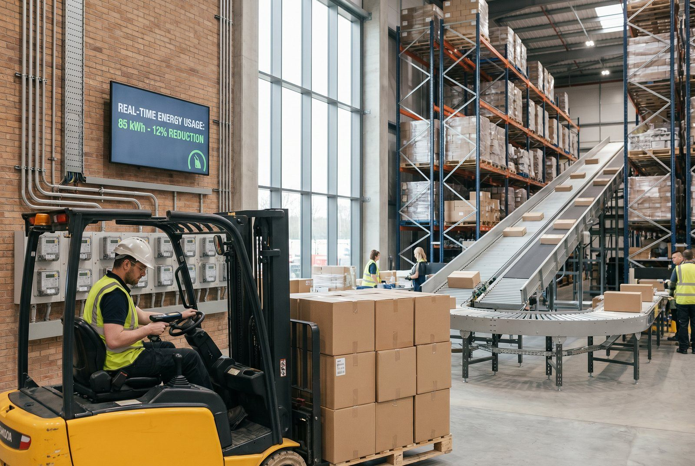

Et lager er ikke bare et sted, hvor varer venter. Det er en kontinuerlig energiforbruger med direkte og indirekte klimapåvirkninger. Belysning kører døgnet rundt, trucktransport sker hele dagen, og emballage bruges og kasseres i store mængder. For webshops og 3PL-aktører er det lagerets CO2-aftryk i stigende grad et konkurrenceparameter og et rapporteringskrav. Her gennemgår vi, hvad der faktisk driver aftrykket og hvad du kan gøre ved det.
Hvad tæller med i lagerets CO2-aftryk?
CO2-aftrykket fra et lager opdeles typisk i tre scopes. Scope 1 dækker direkte udledninger fra lageret selv, for eksempel naturgas til opvarmning eller diesel til gaffeltrucks. Scope 2 dækker indirekte udledninger fra indkøbt el og fjernvarme. Scope 3 dækker alt det øvrige: transport af varer til og fra lageret, emballageproduktion, spild og indkøbte ydelser.
For et typisk webshop-lager fordeler udledningerne sig omtrent sådan: Energiforbrug til bygning og drift udgør 30-45%, emballage udgør 10-20%, og udgående transport udgør 35-55%. Disse tal varierer meget afhængigt af, om lageret er temperaturreguleret, automatiseret og hvor effektivt ordreflowet er.
Et konkret eksempel: Et lager på 2.000 m² med 500 daglige forsendelser bruger typisk 180.000-250.000 kWh el om året. Med en dansk emissionsfaktor på ca. 0,13 kg CO2/kWh (2024) svarer det til 23-33 ton CO2 om året fra el alene. Hertil kommer emballage og fragt.
👉 Vil du kortlægge dit lagers CO2-aftryk? Kontakt SmartPack
De største kilder til CO2 på lageret
Energiforbrug: Opvarmning og køling er ofte den største post. Et uisoleret lager i Danmark kan bruge 80-120 kWh/m² om året til opvarmning alene. Belysning er den post, der hurtigst kan reduceres: overgang fra ældre lyskilder til LED med bevægelsessensorer kan sænke lysforbruget med 60-75%.
Emballage: En gennemsnitlig forsendelse fra en dansk webshop bruger 0,3-0,8 kg emballage. Bruges der plastikluftpuder, boblefolie og overstore kasser, stiger forbruget hurtigt. Emballageproduktion udleder CO2 i hele fremstillingskæden, uanset om emballagen bagefter kan genbruges.
Transport og intern logistik: Gaffeltruck og lagervogne drevet af diesel eller ældre batterier bidrager til scope 1. Udgående forsendelser med varevogn eller lastbil er typisk den absolut største kilde, når hele vareflowet regnes med.
Spild: Varer, der ikke kan sælges og kasseres, er ren CO2-tab. Et lager med høj svindprocent eller dårlig rotationsstyring producerer unødige udledninger, fordi varer er produceret, transporteret og lagret uden at skabe salg.
Sådan reducerer du CO2-aftrykket trin for trin
Det første trin er at kortlægge det faktiske forbrug. Hent energidata fra din elregning og varmeforbrug, opgør emballageforbruget pr. forsendelse og lav en simpel beregning pr. ordrelinje. Uden baseline ved du ikke, hvad der virker.
Det andet trin er at prioritere de største poster. For de fleste lagre er det transport og energi. En forhandling med fragtpartneren om at samle leverancer, skifte til el-varevogn eller bruge en fragtpartner med klima-kompenseret transport giver hurtigt synlige resultater.
Det tredje trin er at optimere emballagen. Reducer kassestørrelserne til det, der faktisk passer til produkterne. Skift luftpuder ud med papirfyld. Brug genanvendt materiale. Emballageoptimering reducerer ikke bare CO2 men også fragtomkostninger, fordi pakkeomfanget falder.
Det fjerde trin er at arbejde med energieffektivitet i selve bygningen. Isolering, automatisk styring af opvarmning og ventilation og solceller på taget er investeringer med lang tilbagebetalingstid, men de reducerer både CO2 og faste driftsomkostninger markant over tid.
Typiske fejl
Den hyppigste fejl er at fokusere udelukkende på scope 1 og 2 og glemme scope 3. For mange webshops er transport og emballage de langt største kilder, men de er ikke direkte synlige i regnskabet. En anden fejl er at købe CO2-kvoter uden at have reduktionsdata, hvilket giver et grønvasket billede uden reel effekt. Endelig er det en fejl at sætte et klimamål uden at have en baseline: du kan ikke styre det, du ikke måler.
Hvad kan SmartPack gøre?
SmartPack's lagerstyring giver dig overblik over ordrelinjer, emballageforbrug og forsendelsesvolumener. Med den data kan du beregne et faktisk CO2-aftryk pr. forsendelse og identificere, hvilke produktkategorier eller forsendelsestyper der driver de højeste udledninger. Det giver et konkret udgangspunkt for at sætte mål og prioritere indsatsen.